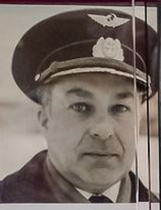
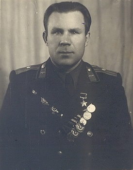
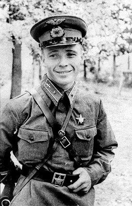
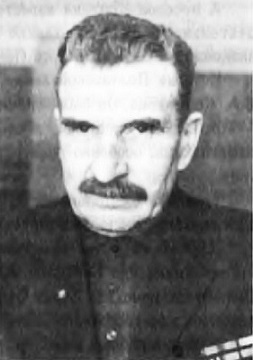
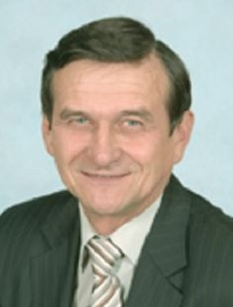
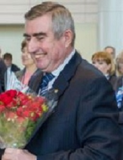

Домодедово и у жителей, и у гостей города чаще всего ассоциируется с аэропортом, который находится поблизости. Поэтому обращения к авиационной теме встречаются очень часто. Летчикам, отличившимся в разные времена, посвящают стихи и книги, их фамилии увековечивают в названии улиц и т.д. Конечно, в истории города свой след оставили не только летчики. Тут вы сможете познакомиться с людьми и других профессий, которые тоже имеют отношение к небу.
6. Михаил Васильевич Поваляев
Михаил Васильевич Поваляев - командир корабля, пилот I класса с очень интересной биографией. Он родился и вырос в Тульской области. Родители уехали в Москву на заработки. Позже определили сына в столичный механический техникум. Но технологом Михаил Васильевич так и не стал. На одном из уроков в его руки попала газета с объявлением: «Егорьевское летное училище набирает курсантов». По распределению попал в Якутию.Так и началась его карьера на Крайнем Севере. «Был мороз минус 70, когда мы начали взлетать — у нас лопнуло колесо, но мы об этом не знали, потом что самолет уже поднялся в воздух. Но если бы это произошло чуть раньше — мы бы носом ударились в дерево. Когда мы садились — нас занесло, но там была широкая посадочная полоса, и мне удалось вырулить», — рассказывал в интервью Михаил Васильевич. 10 лет осуществлял он полёты на Крайнем Севере, на берегах Северного Ледовитого океана.
Первый тип воздушного судна, на котором он летал - это Ли-2.
Потом 20 лет -- на самолетах ТУ-104 и ТУ-114. и 10 лет летал командиром корабля ИЛ-62.
За 40 лет летной карьеры свыше 20 000 часов безаварийного налета.
Про Ил-62 Михаил Васильевич рассказывает с особой теплотой. 20 лет он отлетал на нем командиром.
О своем последнем рейсе Михаил Васильевич рассказывает: "Рейс из Владивостока на Ил-62. 8 тысяч километров,
заправились 100 тонн топлива. При подлёте к Домодедово самолет попал в сильный грозовой фронт, видимость отсутствует
(вертикальная видимость примерно 50 метров - мое прим.). Садиться в таких условиях опасно, но топлива для ухода на запасной аэродром
и второй круг могло не хватить. Пришлось садиться вслепую. Посадка прошла успешно.."
Михаил Васильевич знал, что это его последний полет в качестве командира. Вскоре его списали по состоянию здоровья. Михаилу Васильевичу было тогда 60 лет..
Михаил Васильевич и на пенсии не сидит на месте. Проводит экскурсии в Домодедовском музее авиации в Авиационный городке в Доме культуры «Авиатор»..
Гордится тем, что его помнят. А на его старенький телефон звонят даже из Кремля.
"https://podpolkovnikvvs.livejournal.com/95531.html, right"> https://zavodfoto.livejournal.com/3173912.html
1. Давыд Константинович Курыжов
Давыд Константинович родился 9 марта 1920 года в деревне Кузнецово, ныне Богородского района Нижегородской области в русской крестьянской семье. Bynthtcysq afrn - после окончания школы Давид Константинович работал учителем начальной школы в деревне Касанихе.
Про него можно рассказать многое: и что в Красной Армии с 1939 года, и как успел до войны отучиться в Харьковском военно-штурманском училище и продолжил обучение в Энгельсской школе лётчиков, освоив пилотирование штурмовика Ил-2, и как, будучи отличником, был оставлен в школе работать инструктором.
Известно, что на протяжении двух лет отклоняли его прошение об отправке на фронт и только летом 1943 года рапорт был одобрен. К февралю 1945 года Курыжов совершил 95 вылетов, во время которых уничтожил 5 танков и 15 автомашин противника, много живой силы противника. Указом Президиума Верховного Совета СССР от 18 августа 1945 года за образцовое выполнение боевых заданий командования на фронте борьбы с немецко-фашистскими захватчиками и проявленные при этом мужество и героизм старшему лейтенанту Курыжову Давиду Константиновичу присвоено звание Героя Советского Союза.
После войны продолжил службу в военной авиации, три года был командиром эскадрильи, окончил Высшие офицерские лётно-тактические курсы. В 1952 году окончил Военно-политическую академию имени В. И. Ленина, был заместителем командира авиационного полка по политической части.
В 1954 году по состоянию здоровья подполковник Курыжов был уволен в запас. Награжден орденом Ленина, двумя орденами Красного Знамени, двумя орденами Александра Невского, орденами Отечественной войны 1 и 2 степени, Красной Звезды, медалями. Давыд Константинович проживал в Домодедово, а также некоторое время работал диспетчером в аэропорту. Умер 21 января 2003 года. 8 мая 2003 года в городе Домодедово на доме по улице Красной, где много лет жил Курыжов, открыта памятная доска с именем Героя. В честь Давыда Курыжова в нашем городе названа одна из главных улиц в микрорайоне Южный и школа № 9.
https://ru.wikipedia.org/wiki/Курыжов,_Давыд_Константинович, http://dz-bogorodsk.ru/история-аэроклуба/
2. Виктор Васильевич Талалихин
Родился 18 сентября 1918 года в селе Тепловка Терсинской волости Вольского уезда Саратовской губернии в русской рабочей семье. Окончил школу-семилетку в Вольске в 1933 году. Вместе с родителями в 1933 году приехал в Москву и начал работать на Московском мясокомбинате. В 1934—1937 годах учился в фабрично-заводском училище при мясокомбинате, получил специальность «колбасник».
В Красной армии с января 1938 года. В 1938 году окончил Борисоглебскую военную авиационную школу лётчиков в городе Борисоглебск Воронежской области и получил звание младшего лейтенанта. С июля 1938 году служил в 27-м истребительном авиационном полку ВВС Московского военного округа младшим лётчиком и помощником штурмана эскадрильи. Военную присягу принял 23 февраля 1939 года. Участвовал в советско-финляндской войне (1939—1940). Воевал в составе 68-го истребительного авиаполка, в январе 1940 года переведён в 152-й иап. Согласно биографии «Виктор Талалихин», написанной С. Г. Утехиным в 1960-х годах, на биплане И-153 «Чайка» совершил 47 боевых вылетов,
Перед Великой Отечественной войной жил в городе Клин Московской области, продолжал службу в 27-м истребительном авиаполку. В боях Великой Отечественной войны с июня 1941 года. В июле 1941 года повышен в должности до заместителя командира авиаэскадрильи с переводом в 177-й истребительный авиаполк ПВО. Воевал на истребителях И-16 и МиГ-3.
В ночь на 7 августа 1941 года на И-16 тип 29 одним из первых военных лётчиков РККА произвёл таран в ночном воздушном бою над Москвой в Великой Отечественной войне, сбив в небе Москвы бомбардировщик He-111 лейтенанта И. Ташнера из состава 7-й эскадрильи 26-й бомбардировочной эскадры. Самолёт Талалихина упал в лес вблизи деревни Степыгино (ныне — городской округ Домодедово), а сам раненый лётчик на парашюте спустился в речку Северку. В бою также выжил пилот He-111 Р. Шик
В. В. Талалихин погиб в воздушном бою около Подольска 27 октября 1941 года. Был похоронен в колумбарии Донского кладбища, в 1959 году при организации памятника «Герои Московской битвы» прах был перенесён и захоронен на Новодевичьем кладбище в Москве. В 1948 году зачислен навечно в 1-ю эскадрилью 177-го истребительного авиаполка
Брат Героя — старший лейтенант Николай Талалихин — воевал в должности командира звена в 118-м морском ближнеразведывательном авиационном полку ВВС Северного флота и 11 июля 1941 года не вернулся из боевого вылета. В 2000-х годах было найдено место падения сбитого немецким истребителем гидросамолёта ГСТ, внутри разбитой машины обнаружены останки двух членов экипажа. Один из них был идентифицирован как Н. Талалихин и захоронен с воинскими почестями в 2020 году в Мурманской области на мемориальном комплексе Долина Славы
Именно потому, что известный летчик, герой Советского Союза В. Талалихин в наших краях воевал в годы Великой Отечественной войны и в небе над деревней Мансурово впервые совершил ночной таран немецкого самолета-бомбардировщика, с его фамилией связано сразу несколько мест в Домодедове: село Степыгино, где установлен монумент в его честь, деревня Мансурово, где упал его самолет, село Красный Путь, в котором работает музей боевой авиации имени В.В. Талалихина. Также в честь Виктор Васильевич названа одна из улиц города, которая начинается от Каширского шоссе. Сейчас на ней расположена школа № 7 и хоровая школа имени И. Д. Павловой. Память о Талалихине хранят многие населенные пункты в России. Его именем названо село в Чеховском городском округе, улицы в его родном городе Вольске, а также в Москве, Санкт-Петербурге, Подольске, Челябинске, Краснодаре, Владивостоке, Калининграде и других.
https://ru.wikipedia.org/wiki/Талалихин,_Виктор_Васильевич, https://domodedovoriamo.ru/article/ne-tolko-aviatory-v-chest-kogo-nazvany-ulitsy-domodedova-539039
3. Всеволод Александрович Коломиец
Эту фамилию знает каждый житель нашего города. Начальник строительного управления № 862 треста «Центродорстрой» Министерства транспортного строительства СССР. Заслуженный строитель РСФСР (16.06.1969). Вы спросите - при чём тут небо? Давайте познакомимся с Всеволодом Александровичем поближе.
Родился 29 января 1911 года в города Гадяч Полтавской губернии в семье врача. Трудовую деятельность начал на строительстве дорог в 1930 году после окончания Полтавского автодорожного техникума, был начальником дистанции на Шепетовке. В 1933 году призван в Красную Армию, а после демобилизации в 1935 году вернулся к прежнему месту работы. Спустя некоторое время был направлен в Приморский край, где участвовал в строительстве автодороги Владивосток – Хабаровск. В 1938 году участвовал в боевых действиях у озера Хасан.
В годы Великой Отечественной войны в составе инженерно-сапёрного батальона принимал участие в восстановлении дорог освобождённых
районах страны. После демобилизации из армии руководил различными строительными организациями в Москве, Московской, Рязанской и Тюменской областях.
С сентября 1959 года работал начальником строительного управления № 13 треста Главдорстроя, а затем вплоть до выхода на пенсию в августе 1982 года
был начальником строительного управления № 862 треста «Центрдорстрой».
Под руководством В.А. Коломийца были построены жилой комплекс на Октябрьском поле в Москве, Московский
автомобильно-дорожный институт, автодорога Рязань – Михайлов, олимпийский комплекс в Крылатском и многие другие объекты.
Однако его главным делом считается строительство аэропорта Домодедово. В сентябре 1959 года начинается новый этап в жизни легендарного Всеволода Александровича. Строительное управление, начальником которого он являлся, получило почётное и ответственное задание: строить аэропорт и становится самым крупным подразделением «Центродорстроя» с большой обширной и колоссальной насыщенностью мощной современной техникой для строительства автодорог и аэродромов. Коллектив составлял около 500 человек.
Высокий, могучий, широкий в кости, чуть сутуловатый, с цепким взглядом зорких глаз, с «гоголевским» профилем лица и с усами в серебряных сединках, немногословный и требовательный — таким В.А. Коломиец запомнился многим своим сослуживцам.
Всеволод Александрович Коломиец после образования в 1969 году Домодедовского района избирается членом бюро ГК КПСС и депутатом городско¬го Совета народных депутатов. С 1974 года В.А. Коломиец — заслуженный строитель РСФСР. В 1976 году ему присваивается звание «Отличник Аэрофлота». Награждён орденом Октябрьской Революции (1976), двумя орденами Трудового Красного Знамени (1966, 1969), орденом «Знак Почёта» (1944), медалями. Умер 10 января 1983 года. Похоронен на Кунцевском кладбище в городе Москве.
https://ruspanteon.ru/kolomiecz-vsevolod-aleksandrovich/, https://is-tok.ru/vsevolod-aleksandrovich-kolomiecz-1911-1983/

4. Николай Павлович Рябинин
Рябинин Николай Павлович – командир корабля Домодедовского производственного объединения Московского транспортного управления гражданской авиации Министерства гражданской авиации СССР.
Родился 16 мая 1928 года в Сибирском (ныне – Красноярском) крае. Русский. Окончил Бугурусланское летное училище гражданской авиации в Чкаловской (ныне – Оренбургской) области.
За время лётной работы освоил несколько типов пассажирских самолётов. Продолжительное время работал в аэропорту Домодедово. Участник полётов турбовинтовых пассажирских самолётов Ту-114 на сверхдальних трассах. За успехи в выполнении заданий семилетнего плана (1959-1965) по перевозкам пассажиров воздушным транспортом, применении авиации в народном хозяйстве страны и освоении новой авиационной техники награжден орденом Ленина. В конце летной эксплуатации Ту-114 в 1976 году командиром корабля Н.П. Рябининым, в составе экипажа была произведена сложнейшая посадка на грунтовую полосу ограниченных размеров – 2100 метров для нужд Криворожского авиационно-технического училища.
В дальнейшем являлся командиром корабля Ил-62 Домодедовского производственного объединения Московского транспортного управления гражданской авиации Министерства гражданской авиации СССР..
Указом Президиума Верховного Совета СССР от 4 февраля 1983 года за выдающиеся производственные достижения, досрочное выполнение пятилетнего плана, освоение и внедрение новой авиационной техники и проявленную при этом трудовую доблесть Рябинину Николаю Павловичу присвоено звание Героя Социалистического Труда с вручением ордена Ленина и золотой медали «Серп и Молот».
После завершения лётной работы и выхода на пенсию жил в микрорайоне Авиационный города Домодедово Московской области. Принимал активное участие в общественной жизни..
Умер 11 января 2005 года. Похоронен в городе Домодедово Московской области на кладбище микрорайона Востряково.
Награждён 2 орденами Ленина (15.08.1966; 04.02.1983), медалями. В микрорайоне Авиационный города Домодедово на доме, где с 1973 года проживал Н.П. Рябинин, установлена Мемориальная доска.
https://warheroes.ru/hero/hero.asp?Hero_id=25680
5. Виталий Яковлевич Шаханов
Родился 2 июля 1948 года в Мурманской области, русский.
После службы в Советской Армии в 1969 году поступил в Ленинградский санитарно-гигиенический медицинский институт, по окончании которого был направлен в Домодедовское производственное объединение Гражданской авиации. Именно тут в 1978 г. он начал свой профессиональный путь с санитарного врача в аэропорту. В 1998 году назначен на должность управляющего директора Аэровокзального комплекса "Домодедово". Под руководством Виталия Яковлевича осуществлена реконструкция здания и площадей, произведено полное технологическое переоснащение аэровокзального комплекса. При его непосредственном участии внедрена технология, позволяющая оперативно взаимодействовать с государственными службами - пограничной, таможенной, ЛОВД, ФСБ, миграционным контролем, консульскими службами. до Управляющего директора ЗАО "Аэровокзальный комплекс "Домодедово"
Удостоен звания "Отличник здравоохранения СССР", награжден нагрудными знаками "Отличник Аэрофлота", "Почетный работник транспорта России"; кандидат в мастера спорта по лыжам и легкой атлетике; член Совета Общественной палаты городского округа Домодедово.
https://www.aviaport.ru/digest/2017/04/07/434813.html, https://viperson.ru/people/shahanov-vitaliy-yakovlevich, https://kventz-livejournal-com.turbopages.org/kventz.livejournal.com/s/191407.html
7. Сергей Александрович Филиппов
Сергей Александрович Филиппов – заслуженный ветеран аэропорта Домодедово.
Известно, что он прошел путь от слесаря до управляющего директора.
Под руководством С.А.Филиппова в топливозаправочным комплексе Домодедово внедрялись самые современные
технологии и оборудование, создавались новые инфраструктурные объекты.
В частности, реконструированы пункты налива топливозаправщиков, построен новый топливопровод, оснащена самым передовым оборудованием лаборатория ГСМ.
Сергей Александрович воспитал десятки специалистов, многие из них работают на руководящих должностях.
Домодедово – единственный аэропорт Московского авиаузла (МАУ), создавший галерею славы,
чтобы отметить вклад ветеранов в развитие аэропорта. Первые 7 звезд были заложены в 2017 году
В 2019 году к героям «Галереи Славы» заслуженно присоединился и Сергей Александрович Филиппов.
https://domodedovod.ru/aeroport/aeroport-domodedovo-zalozhil-novuyu-zvezdu-v-galeree-slavy/, https://warheroes.ru/hero/hero.asp?Hero_id=25680